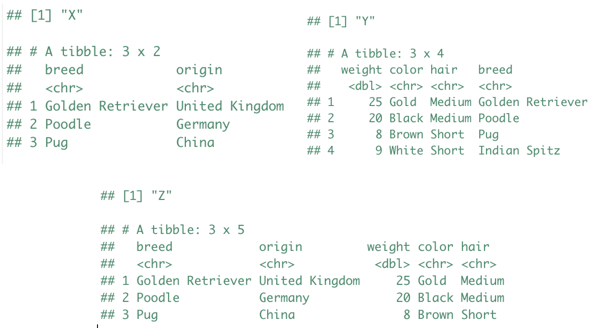

Lecture 4 - Combining data frames (binds and joins) & base R control flow#
Lecture learning objectives:#
By the end of this lecture and worksheet 4, students should be able to:
Compare and contrast mutating joins, filtering joins and set operations
Choose the appropriate two table
dplyrfunction based on the type of join desired between two data frames, and use it in R to obtained the desired data frame from joining two tablesWrite conditional statements in R with
if,else ifandelseto run different code depending on the inputWrite for loops in R to repeatedly run code
library(tidyverse)
library(gapminder)
options(repr.matrix.max.rows = 10)
── Attaching core tidyverse packages ───────────────────────────────────────────── tidyverse 2.0.0 ──
✔ dplyr 1.1.2 ✔ readr 2.1.4
✔ forcats 1.0.0 ✔ stringr 1.5.0
✔ ggplot2 3.4.3 ✔ tibble 3.2.1
✔ lubridate 1.9.2 ✔ tidyr 1.3.0
✔ purrr 1.0.2
── Conflicts ─────────────────────────────────────────────────────────────── tidyverse_conflicts() ──
✖ dplyr::filter() masks stats::filter()
✖ dplyr::lag() masks stats::lag()
ℹ Use the conflicted package (<http://conflicted.r-lib.org/>) to force all conflicts to become errors
Combining two data tables#
We will talk about two different ways of combining data tables in R:
binds
joins
Binds#
This is basically smashing rocks tibbles together. You can smash things together row-wise (“row binding”) or column-wise (“column binding”).
Why do I characterize this as rock-smashing? They’re often fairly crude operations, with lots of responsibility falling on the analyst for making sure that the whole enterprise even makes sense.
Row binding#
When row binding, you need to consider the variables in the two tibbles. Do the same variables exist in each? Are they of the same type? Different approaches for row binding have different combinations of flexibility vs rigidity around these matters.
Let’s bind 3 data frames together vertically (row binding):
fship <- tribble(
~Film, ~Race, ~Female, ~Male,
"The Fellowship Of The Ring", "Elf", 1229, 971,
"The Fellowship Of The Ring", "Hobbit", 14, 3644,
"The Fellowship Of The Ring", "Man", 0, 1995
)
rking <- tribble(
~Film, ~Race, ~Female, ~Male,
"The Return Of The King", "Elf", 183, 510,
"The Return Of The King", "Hobbit", 2, 2673,
"The Return Of The King", "Man", 268, 2459
)
ttow <- tribble(
~Film, ~Race, ~Female, ~Male,
"The Two Towers", "Elf", 331, 513,
"The Two Towers", "Hobbit", 0, 2463,
"The Two Towers", "Man", 401, 3589
)
fship
rking
ttow
| Film | Race | Female | Male |
|---|---|---|---|
| <chr> | <chr> | <dbl> | <dbl> |
| The Fellowship Of The Ring | Elf | 1229 | 971 |
| The Fellowship Of The Ring | Hobbit | 14 | 3644 |
| The Fellowship Of The Ring | Man | 0 | 1995 |
| Film | Race | Female | Male |
|---|---|---|---|
| <chr> | <chr> | <dbl> | <dbl> |
| The Return Of The King | Elf | 183 | 510 |
| The Return Of The King | Hobbit | 2 | 2673 |
| The Return Of The King | Man | 268 | 2459 |
| Film | Race | Female | Male |
|---|---|---|---|
| <chr> | <chr> | <dbl> | <dbl> |
| The Two Towers | Elf | 331 | 513 |
| The Two Towers | Hobbit | 0 | 2463 |
| The Two Towers | Man | 401 | 3589 |
tribbleis another function that you can use to make tibbles, but let’s you write the data in a more human readable form.
# bind the rows
bind_rows(fship, ttow, rking)
| Film | Race | Female | Male |
|---|---|---|---|
| <chr> | <chr> | <dbl> | <dbl> |
| The Fellowship Of The Ring | Elf | 1229 | 971 |
| The Fellowship Of The Ring | Hobbit | 14 | 3644 |
| The Fellowship Of The Ring | Man | 0 | 1995 |
| The Two Towers | Elf | 331 | 513 |
| The Two Towers | Hobbit | 0 | 2463 |
| The Two Towers | Man | 401 | 3589 |
| The Return Of The King | Elf | 183 | 510 |
| The Return Of The King | Hobbit | 2 | 2673 |
| The Return Of The King | Man | 268 | 2459 |
Column binding#
When column binding, the onus is entirely on the analyst to make sure that the rows are aligned. I would avoid column binding whenever possible. If you can introduce new variables through any other, safer means, do so! By safer, I mean: use a mechanism where the row alignment is correct by definition. A proper join is the gold standard. In addition to joins, functions like dplyr::mutate() and tidyr::separate() can be very useful for forcing yourself to work inside the constraint of a tibble.
Let’s bind 3 columns onto a data frame:
fship <- tribble(
~Film,
"The Fellowship Of The Ring",
"The Fellowship Of The Ring",
"The Fellowship Of The Ring"
)
fship_data <- tribble(
~Race, ~Female, ~Male,
"Elf", 1229, 971,
"Hobbit", 14, 3644,
"Man", 0, 1995
)
fship
fship_data
| Film |
|---|
| <chr> |
| The Fellowship Of The Ring |
| The Fellowship Of The Ring |
| The Fellowship Of The Ring |
| Race | Female | Male |
|---|---|---|
| <chr> | <dbl> | <dbl> |
| Elf | 1229 | 971 |
| Hobbit | 14 | 3644 |
| Man | 0 | 1995 |
# bind the columns
bind_cols(fship, fship_data)
| Film | Race | Female | Male |
|---|---|---|---|
| <chr> | <chr> | <dbl> | <dbl> |
| The Fellowship Of The Ring | Elf | 1229 | 971 |
| The Fellowship Of The Ring | Hobbit | 14 | 3644 |
| The Fellowship Of The Ring | Man | 0 | 1995 |
Joins#
Here you designate a variable (or a combination of variables) as a key. A row in one data frame gets matched with a row in another data frame because they have the same key. You can then bring information from variables in a secondary data frame into a primary data frame based on this key-based lookup. That description is incredibly oversimplified, but that’s the basic idea.
A variety of row- and column-wise operations fit into this framework, which implies there are many different flavors of join. The concepts and vocabulary around joins come from the database world. The relevant functions in dplyr follow this convention and all mention join.
Your best cheatsheet: https://stat545.com/join-cheatsheet.html
Compliments of Jenny Bryan!
Left join#
left_join(x, y): Return all rows from x, and all columns from x and y. If there are multiple matches between x and y, all combination of the matches are returned. This is a mutating join.
Source: https://stat545.com/join-cheatsheet.html
Let’s work through an example. We will create a data frame called am_af_countries from American and African countries from the gapminder data set, that contains the country and continent rows:
am_af_countries <- gapminder %>%
filter(continent == "Americas" | continent == "Africa") %>%
select(country, continent) %>%
group_by(country) %>%
slice(1)
am_af_countries
| country | continent |
|---|---|
| <fct> | <fct> |
| Algeria | Africa |
| Angola | Africa |
| Argentina | Americas |
| Benin | Africa |
| Bolivia | Americas |
| ⋮ | ⋮ |
| United States | Americas |
| Uruguay | Americas |
| Venezuela | Americas |
| Zambia | Africa |
| Zimbabwe | Africa |
country_codes
| country | iso_alpha | iso_num |
|---|---|---|
| <chr> | <chr> | <int> |
| Afghanistan | AFG | 4 |
| Albania | ALB | 8 |
| Algeria | DZA | 12 |
| Angola | AGO | 24 |
| Argentina | ARG | 32 |
| ⋮ | ⋮ | ⋮ |
| Vietnam | VNM | 704 |
| West Bank and Gaza | PSE | 275 |
| Yemen, Rep. | YEM | 887 |
| Zambia | ZMB | 894 |
| Zimbabwe | ZWE | 716 |
# join data frames
left_join(am_af_countries, country_codes)
Joining with `by = join_by(country)`
| country | continent | iso_alpha | iso_num |
|---|---|---|---|
| <chr> | <fct> | <chr> | <int> |
| Algeria | Africa | DZA | 12 |
| Angola | Africa | AGO | 24 |
| Argentina | Americas | ARG | 32 |
| Benin | Africa | BEN | 204 |
| Bolivia | Americas | BOL | 68 |
| ⋮ | ⋮ | ⋮ | ⋮ |
| United States | Americas | USA | 840 |
| Uruguay | Americas | URY | 858 |
| Venezuela | Americas | VEN | 862 |
| Zambia | Africa | ZMB | 894 |
| Zimbabwe | Africa | ZWE | 716 |
What if your column names don’t match?#
You can specify which columns to join by!
#rename country column _renamed <- am_af_countries %>%
am_af_countries <- am_af_countries %>%
rename(countries = country)
am_af_countries
| countries | continent |
|---|---|
| <fct> | <fct> |
| Algeria | Africa |
| Angola | Africa |
| Argentina | Americas |
| Benin | Africa |
| Bolivia | Americas |
| ⋮ | ⋮ |
| United States | Americas |
| Uruguay | Americas |
| Venezuela | Americas |
| Zambia | Africa |
| Zimbabwe | Africa |
left_join(am_af_countries, country_codes,
by = c("countries" = "country"))
| countries | continent | iso_alpha | iso_num |
|---|---|---|---|
| <chr> | <fct> | <chr> | <int> |
| Algeria | Africa | DZA | 12 |
| Angola | Africa | AGO | 24 |
| Argentina | Americas | ARG | 32 |
| Benin | Africa | BEN | 204 |
| Bolivia | Americas | BOL | 68 |
| ⋮ | ⋮ | ⋮ | ⋮ |
| United States | Americas | USA | 840 |
| Uruguay | Americas | URY | 858 |
| Venezuela | Americas | VEN | 862 |
| Zambia | Africa | ZMB | 894 |
| Zimbabwe | Africa | ZWE | 716 |
Other joins:#
There are several other joins available to you in the {dplyr} package. I give a high level overview next, and then you will get a chance to interact and explore these functions in more detail in your worksheet and lab.
Inner join#
inner_join(x, y): Return all rows from x where there are matching values in y, and all columns from x and y. If there are multiple matches between x and y, all combination of the matches are returned. This is a mutating join.
Source: https://stat545.com/join-cheatsheet.html
Semi join#
semi_join(x, y): Return all rows from x where there are matching values in y, keeping just columns from x. A semi join differs from an inner join because an inner join will return one row of x for each matching row of y, where a semi join will never duplicate rows of x. This is a filtering join.
Source: https://stat545.com/join-cheatsheet.html
Anti join#
anti_join(x, y): Return all rows from x where there are not matching values in y, keeping just columns from x. This is a filtering join.
Source: https://stat545.com/join-cheatsheet.html
Full join#
full_join(x, y): Return all rows and all columns from both x and y. Where there are not matching values, returns NA for the one missing. This is a mutating join.
Source: https://stat545.com/join-cheatsheet.html
Clicker 2: Given the dataframes “X” and “Y” below, what kind of join would you perform to produce “Z”? Provide the code to do so.
{kind=link}
A) inner_join(X, Y)
B) left_join(Y, X)
C) anti_join(X,Y)
D) full_join(X,Y)
Answer: A
Control flow in base R#
Similar to other programming languages, R has the now standard control flow capabilities. We will talk about two in this course:
forloopsif/else if/elsestatements (conditionals)
Control Flow: for loops#
For loops in R, work like this:
for (item in vector) perform_actionWhen code needs to be split across lines in R, we use the
{operator to surround it
Iterating over an object#
Let’s write a for loop that iterates over a vector of the numbers 1, 2, 3 and prints out the square of each.
sequence <- c(2, 3, 4)
sequence
typeof(sequence)
- 2
- 3
- 4
for (number in sequence) {
print(number ^ 2)
}
[1] 4
[1] 9
[1] 16
Using indices in a for loop#
for (i in seq_along(sequence)) {
print(sequence[i] ^ 2)
}
[1] 4
[1] 9
[1] 16
Why use seq_along?#
It gives you a sequence along the item you want to iterate over.
seq_along(sequence)
- 1
- 2
- 3
Beware of using length instead:
sequence <- c()
for (i in seq_along(sequence)) {
print(sequence[i]^2)
print(i)
}
There is nothing in the vector! Nothing should be printed!
Source: Advanced R by Hadley Wickham
Control Flow: if, if else and else statements#
The basic form of an if statement in R is as follows:
if (condition) true_action
if (condition) true_action else false_action
Again, when code needs to be split across lines in R, we use the
{operator to surround it to create code blocks
Example#
Below we write a conditional which compares a threshold with a measure. It prints “Over the limit” if the measure is over the threshold, “Under the limit” if the measure is under the threshold and “Exactly at threshold” otherwise.
threshold <- 95.0
measure <- 93.5
if (measure > threshold) {
print("Over the limit")
} else if (measure < threshold) {
print("Under the limit")
} else {
print("Exactly at threshold")
}
[1] "Under the limit"
Notes - you do not have to use
else if, or evenelseif it doesn’t make sense. I just wanted to demonstrate the full control flow syntax. Additionally, you can have multipleelse ifstatements if you have > 3 choices to make.
Attributions#
Stat 545 created by Jenny Bryan
R for Data Science by Garrett Grolemund & Hadley Wickham